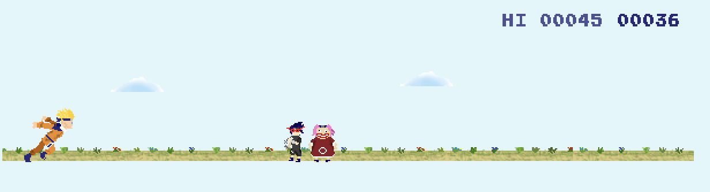

DESIGN PROCESS
I want to create a simple web-based endless running game,
inspired by the Google Chrome Dinosaur T-Rex Game.
This Easter Egg is typically hidden on the 'No Internet connection' error
page in Google's Chrome web browser and can be played offline.
It impressed me when I was a little kid.
This is the website of the Dinosaur T-Rex Game:
Trex-runner
Also, this Dinosaur T-Rex Game can be in different styles.
For example, the T-Rex Runner Game in Naruto style:
Naruto

Or, the T-Rex Runner Game in Nyan Cat style:
Nyan Cat
As a result, I intend to recreate this game in the style of Stardew Valley.
My running game looks like:
I plan to redesign the controlled character, originally a T-Rex dinosaur.
I use a small horse character found within Stardew Valley as my character.
I also use the gate, stone fence, and wood fence as the obstacles.
In Stardew Valley, hay comes from dried plants and is used to feed farm animals.
So I use hay as the object to collect.
Moreover, I would like to build a “stable” in my second canvas.
Players can select the horse they like, which is an advanced function beyond the original T-Rex dinosaur game.
The graphics were sourced from the Stardew Valley wiki:


You can click the link below and check the graphics!
Horse
Flooring_01
Flooring_55
Gate
Stone Fence
Wood Fence
This is the orginal concept for this game. It includes five states of the game.


{kind=link}
{kind=link}